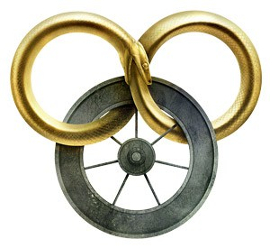

Robert Jordan
The Wheel of Time

Robert Jordan - 1948-2007
“The Wheel of Time turns, and Ages come and pass, leaving memories that become legend. Legend fades to myth, and even myth is long forgotten when the Age that gave it birth comes again.”

- *New Spring - 2004
- The Eye of the World - 1990
- The Great Hunt - 1990
- The Dragon Reborn - 1991
- The Shadow Rising - 1992
- The Fires of Heaven - 1993
- Lord of Chaos - 1994
- A Crown of Swords - 1996
- The Path of Daggers - 1998
- Winter's Heart - 2000
- Crossroads of Twilight - 2003
- Knife of Dreams - 2005
- The Gathering Storm - 2009
- Towers of Midnight - 2010
- A Memory of Light - 2013 *Prequel set 20 years before the events of the first novel.